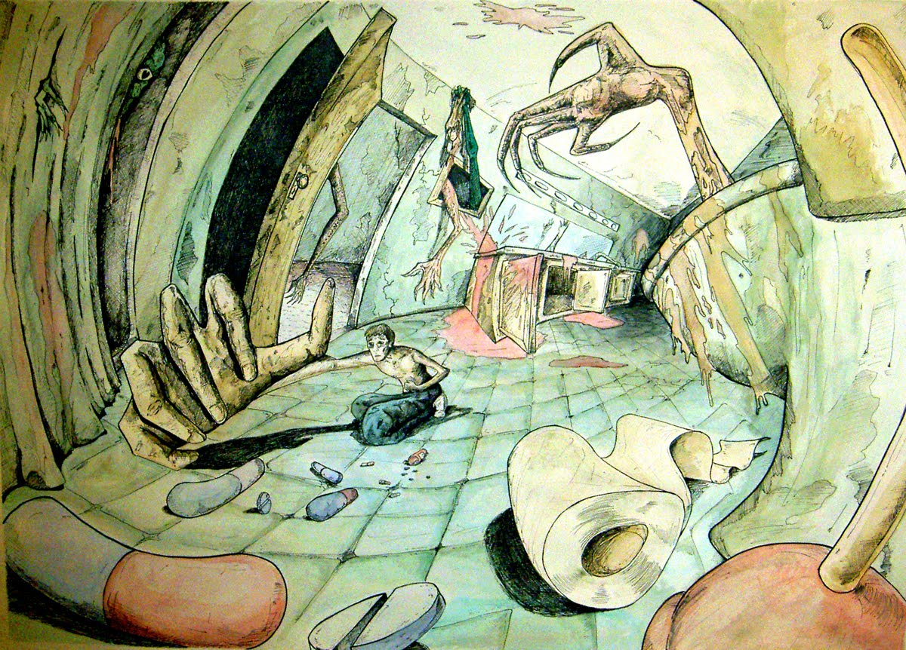

Depressão
Depressão é um transtorno psiquiátrico caracterizado por desinteresse em atividades e perda do prazer pela vida, muitas vezes sem um motivo evidente.
Uma das maiores causas de suicídio no mundo, a depressão é um problema que vem se tornando comum ao passar dos anos, não afetando somente o psicológico de quem a possuí, mas também seu físico, como baixa nos sistemas imunulógicos e aumento de processos inflamatórios.
O transtorno afeta a bioquímica cerebral diminuindo a produção de neurotransmissores como a serotonina noradrenalina e dopamina, na maioria dos casos exige avaliação profissional.
Uma das maneiras de se previnir desse mal, é adotar o conceito de "corpo são, mente sã", pois cuidar do organismo reflete na saúde mental, enquanto que atividades físicas promovem um aumento nos hormônios e outras substâncias importantes para o corpo.
Outras doenças que levam ao suicídio
Porque depressão não é a única doença responsável por incentivar alguém a tirar sua própria vida.
A causa exata desse distúrbio ainda é desconhecida, porém acredita-se que esta ligado a genética, ao ambiente que o indivíduo vive e a química do cérebro.
Os sintomas são distintos e incluem: dificuldades para dormir, perda de contato com a realidade, falta de energia e motivação, perda de interesse nas atividades cotidianas e mudanças bruscas de humor, o tratamento é necessário por toda a vida.
sendEzquizofrenia
É caracterizada por experiências fora da realidade, ver ou ouvir coisas que não existem, fala e comportamento desorganizado, dificuldade de concentração e memória.
Bem como o transtorno bipolar, este deve ser tratado até o fim da vida com acompanhamento piscológico e remédios controlados.
sendDoenças terminais
Doenças terminais são doenças em que não há mais possibilidade de cura.
Na maioria dos casos esse tipo de doença acompanha uma enorme dor e sofrimento e por não terem cura grande parte dos enfermos opta pelo suicídio.
Uma das doenças mais difundidas que por vezes se encaixa nesse conceito é o câncer, que provoca o crescimento desordenado de células invadindo tecidos e órgãos e se espalhando para as demais regiões do corpo, quanto benigno pode ser tratado com seções de quimioterapia e medicamentos, quando maligno as porcentagens de cura são extremamente pequenas.
A neraugia do trigêmo é conhecida nos hospitais como a doença do suicídio pois afeta o quinto nevo craniano provocando dores insuportáveis por até 2 minutos.

Dependência química
"O vício tem somente como recompensa o arrependimento" Xavier de Maistre
Considerada como um transtorno mental pela Organização Mundial da Saúde, a depêndencia química atinge aqueles que fazem uso constante de determinadas drogas como álcool, cigarro, maconha, cocaína, crack e até mesmo medicamentos(salvo naturais).
Alguns fatores de risco são: genética, transtornos psiquiátricos e problemas afetivos.
Sintomas comuns incluem:
- forwardVício pela substância;
- forwardPerda de controle;
- forwardAumento na tolerância;
- forwardAbstinência e ansiedade quando não esta sob o efeito da droga;
O tratamento varia de acordo com a pessoa e substância consumida, sendo necessário um acompanhamento a longo prazo de diversos profissionais na área da saúde como psicólogos, psiquiatras, clínicos, terapeutas entre outros.
Não se pode afirmar com 100% de certeza que a dependência química tem cura, pois assim como o diabetes e a hipertensão ela é uma doença crônica, todavia com a ajuda de tratamento, mudanças de hábito e força de vontade do enfermo é possível se manter longe da substância por tempo indeterminado.
Como ajudar alguém que quer cometer suicídio
Pode ser que, em algum momento de nossas vidas, desconfiemos de que alguém próximo está pensando em suicidar-se em decorrência de um grande sofrimento. Diante dessa situação, o sentimento de impotência pode se fazer presente, fazendo-nos acreditar que não há como intervir, uma vez que a pessoa parece já ter decidido encerrar a própria vida.
É uma situação triste e um tanto quanto complicada quando alguém que conhecemos pensa em cometer suicídio, erroneamente, a atitude tomada por muitos é a de se desesperar por seu ente querido ou amigo e querendo ajudar reprimir seus sentimentos com frases não tão acolhedoras:
"Há pessoas em condições piores que não estão pensando nisso."
"Quem comete suicídio vai para o inferno."
"Isso é falta de Deus!"
"Isso é uma frescura!"
"Você não pensa nos outros?"
Esse tipo de frase raramente ajuda alguém que esta sofrendo, pois o indivíduo pode se sentir julgado, como se a solução de tudo fosse se equiparar aos demais.
A melhor maneira de ajudar é ter um diálogo aberto e respeitoso com a pessoa que gere empatia e ajude a entender melhor o que ela esta sentindo.
Tentar ao máximo fazer perguntas abertas como por exemplo:
"O que você fez hoje?"
"O que você gosta de fazer no tempo livre?"
"Qual a sua opinião em relação a tal coisa?"
"Quais são as coisas que mais lhe atraem na sua escola/trabalho?"
Evite perguntas fechadas ou muito pessoais além de demonstrações de espanto:
"Você estuda?"
"Você mora com seus pais?"
"Você já fez tal coisa?"
"E foi bom/ruim?"
"Mas porque você vai fazer isso?"
"Meu deus!"
"Que horror!"
É importante também manter uma escuta ativa, isto é escutar e compreender o que o outro diz e não simplesmente esperar uma pausa para respondê-lo, de vez em quando breves interrupções são bem-vindas, como perguntas para entender melhor o assunto ou acentuações acerca dele, sempre retornar para algum ponto que não tenha ficado claro na conversa, demonstrando interesse sobre o diálogo, e em hipótese alguma julgar o emissor. Paciência é primordial para estes casos.
Aconselhe também a busca por ajuda profissional, pois ele é o mais capacitado para auxiliar alguém com pensamentos suicídas.